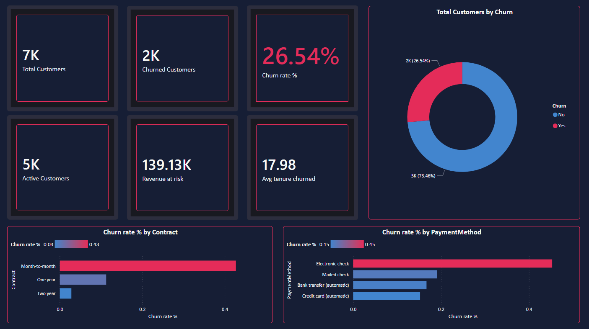
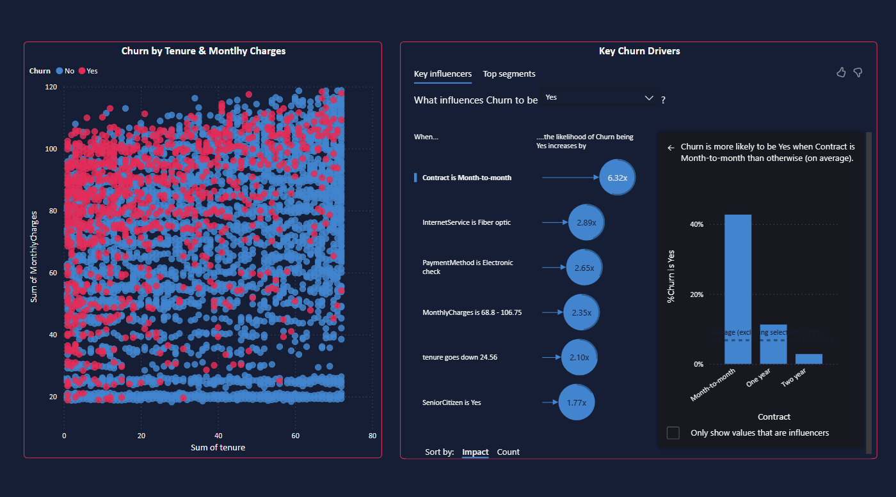
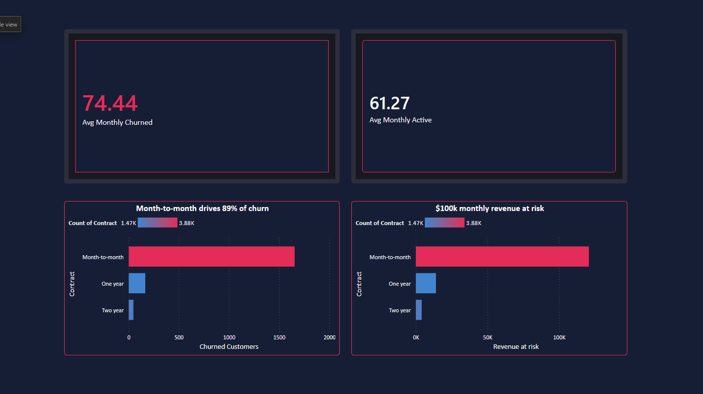

End-to-end Power BI report analyzing churn drivers for a telecom company with 7,043 customers. Three interactive pages — KPI overview, behavioral deep dive, and financial impact assessment — built on a Star Schema with custom DAX measures.



Target month-to-month customers with incentives for annual conversion. This single action addresses 89% of churn volume and $100K+ monthly revenue risk.
Fiber optic users churn at 2.89× — despite paying a premium. Investigate service quality gaps and set clearer expectations at onboarding to reduce dissatisfaction.
Churn is heavily concentrated before month 20. Implement a structured onboarding and check-in program for the first 20 months — the highest-risk window for loss.
A 3-page interactive report that turns raw customer data into three actionable business priorities — each with a clear financial justification.